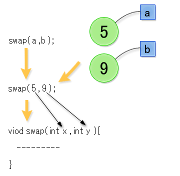
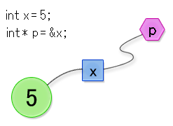
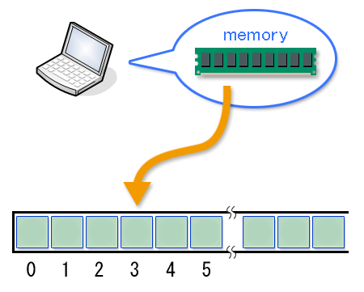
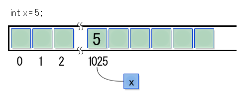
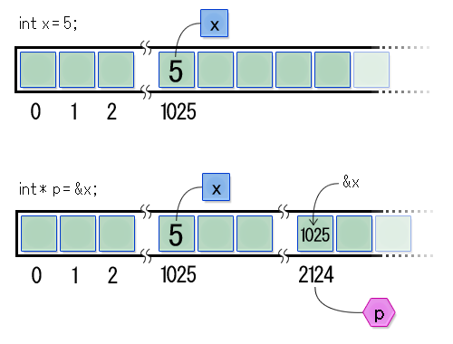
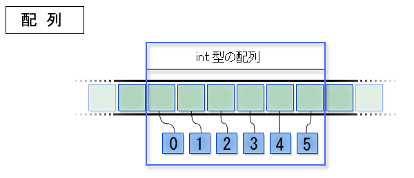

第 8 章で説明したバブルソートを思い出してください。 このバブルソートでは「1 つ先の要素と値の大小を比較して、自分の方が小さい場合には要素を入れ替える」という処理がありました。/* 1. 要素aよりも要素bが大きい場合、各要素の示す値を入れ替える */
if (score[j] < score[j+1]) {
int lesser = score[j];
int greater = score[j+1];
score[j] = greater;
score[j+1] = lesser;
}「変数どうしの値を入れ替える」という処理は今後も頻繁におこなう必要がありそうです。そこで、この処理を関数にしてしまいましょう。 関数名は swap にします。/* 引数xとyの値を入れ替える関数 */
void swap(int x, int y) {
int tempX = x;
int tempY = y;
x = tempY;
y = tempX;
}この swap 関数を呼べば、引数として渡した 2 つの変数の値が入れ替わるように思えます。以下のプログラムで動作を確認してみます。#include <stdio.h>
/* 引数xとyの値を入れ替える関数 */
void swap(int x, int y) {
int tempX = x;
int tempY = y;
x = tempY;
y = tempX;
}
int main() {
int a = 5;
int b = 9;
printf("a = %d, b = %d\n", a, b);
/* 変数を入れ替える */
swap(a, b);
printf("a = %d, b = %d\n", a, b);
return 0;
}以下に実行結果を示します。意図に反して変数 a、b の値は入れ替わりません。これは、swap 関数の引数の名前を x と y でなく、a と b に変えても同じことです。入れ替わりません。main 関数の中の変数と swap 関数の中の引数や変数は同じ名前でも異なるものなのです。a = 5, b = 9
a = 5, b = 9上のプログラムでは、main 関数の中で swap(a, b) と swap 関数を呼んでいます。すると、まず括弧内の a と b の値が計算されます。計算結果は 5 と 9 です。呼び出しが swap(a + 3, b + 1) のような式の形をしている可能性があることも考慮してください。その場合、a + 3 と b + 1 の 2 つの式が計算されます。
括弧内の変数や式の計算結果の値は、swap 関数の引数 x と y の値となります。その状態で関数 swap の計算が始まります。関数呼び出しの際には、引数を渡しますが、渡されるのは値なのであって、変数そのものではありません。
関数呼び出しの引数
ポインタとは？
このように変数の値を別な関数の中で変えることは簡単にはできません。そのようなことをしたい場合は、関数に引数として変数の値ではなく、変数そのものを（値として）渡す必要があります。C言語の機能のひとつであるポインタを利用すると、これが実現できます。
ポインタとは、コンピュータがプログラムにしたがって計算を実行するときに、コンピュータ内部でおこなわれている処理内容に強く関係した概念です。しかしそれについて説明する前に、そのようなコンピュータの内部処理から離れたポインタの説明を示しておきます。（プログラムに登場する概念には色々な説明があるのです。）
そもそも、これまでにでてきた変数とは、整数や浮動小数点数の「値」についた「名前」でした。「値」として扱えたのは整数や浮動小数点数だけでしたが、実は「名前」そのものも「値」として扱うことができます。もちろん名前のかけ算などはできませんが、変数に代入したり、関数の引数として渡すことができます。「名前」そのものを「値」としてみるとき、その「値」のデータ型をポインタ型といいます。またそのような「値」のことをポインタといいます。ポインタ型の変数の「値」は、別な変数の「名前」です。その名前の変数の「値」をとりだしたり変更することができます。下の図では、整数 5 を値とする変数 x があり、その変数の名前 x を値とするポインタ型変数 p がある状態を表しています。
ポインタ型の変数 p
コンピュータ内部での変数や配列の姿
コンピュータは実行しているプログラムの計算途中のデータを記憶しておくために、メモリと呼ばれる領域を持っています。 このメモリはC言語のプログラムに置き換えて考えると、巨大な配列です。プログラム中で使われる個々の変数は、実はこの巨大な配列の一部分なのです。
メモリ
配列の各要素を参照するためには 0 から始まる数値（インデックス）を利用しました。コンピュータが管理するメモリについても、同じように 0 から始まるインデックスが各要素につけられています。これをアドレス（番地）といいます。コンピュータはメモリ全体をこのアドレスを使って管理しています。
C言語で変数を宣言するとは、何かの値を表す名前を新たに決めることです。しかしこれはC言語側での考え方です。コンピュータにとって変数を宣言するとは、その変数の値を保存するための領域をメモリ上に確保して、そのインデックスを決めることです。さらにその変数の値は、確保した領域に書き込まれます（保存されます）。たとえば 5 という値をもつ変数 x を宣言したとします。
変数 x の宣言
これはコンピュータにとっては、値を保存する場所を確保し、そこに 5 という値を書き込み、その領域を x と呼ぶこと、です。 上の図であれば、5 という値を保存する領域のアドレスが 1025 で、その領域に 5 という値が書き込まれているのがわかります。
ポインタの宣言
ポインタとは、メモリのアドレスを少し抽象化したものです。ほとんど同じものだと考えても、それほど不都合はありません。C言語はポインタを備えるので、メモリのアドレスをプログラム中で直接取り扱うことができます。もちろん最初に説明したように、ポインタとは変数の名前のこと、と考えてもかまいません。（ポインタを値とする）ポインタ型の変数を宣言するには次のようにします。《データ型》* 《変数名》 = & 《別な変数の名前》;データ型と変数名の間に * があるのが特徴です。使い方の例を示します。int x = 5; /* 変数 x の値は 5 */
int* p = &x; /* ポインタ p は変数 x をさす */
double y = 9.8; /* 変数 y の値は 9.8 */
double* q = &y; /* ポインタ q は変数 y をさす */
char z = 'A'; /* 変数 z の値は文字 A (の文字コード) */
char* r = &z; /* ポインタ r は変数 z をさす */上で、変数 p の値は変数 x 用に確保された領域のアドレスです。あるいは、変数 x の名前（つまり x）が変数 p の値、と考えても良いでしょう。このような状態をしばしば、変数 p は変数 x を指す、といいます。また、変数 p のことを単に「ポインタ」と呼ぶこともあります。ポインタ型の変数の宣言で《データ型》のところに書くのは、それが指す変数（例えば変数 x）のデータ型です。逆に上の例で、変数 q が変数 x を指すことはできません。データ型が異なるからです。変数 q が指すことができるのは、double 型の変数だけですので、以下はエラーとなります。int x = 5;
double* q = &x; /* エラー */& 演算子と * 演算子
次にポインタを使った計算をやり方を示します。まず既に上で登場していますが、& 演算子について説明します。この演算子をアドレス演算子といいます。これは単項演算子で、& の右側に書かれた変数を指すポインタ（その変数のアドレス）が計算結果となります。int* p = &x;このように変数宣言をすると、= の右側が変数 p の初期値になりますが、変数 x を指すポインタ（変数 x のアドレス）を計算して、それをポインタ型の変数 p の初期値とする、という意味だったのです。& 演算子は、このように変数の初期値を計算するところだけでなく、普通の式や関数の引数を書くところでも使うことができます。
これをコンピュータ内部のメモリの世界の言葉で表現すると、下の図のようになります。まず変数 x の値が 5 だとすると、メモリ上のどこかのアドレス（図では 1025）の領域が変数 x 用に確保されます。この状態で、変数 p を上の様に宣言すると、&x の計算結果は、変数 x のアドレス 1025 となります。したがって、変数 p 用に確保された領域（図ではアドレス 2124）には 1025 が保存されます。結果として変数 p は変数 x を指すポインタとなります。
ポインタ型の変数とメモリ
アドレス演算子は、変数を宣言したときに初期値を計算するだけでなく、代入式の右辺の値を計算するときにも使えます。これを利用すると、ポインタ型の変数に新しい値を代入して、違う変数を指すように変えることができます。
一方、間接演算子 * を使うと、そのポインタが指す変数の値を取り出すことができます。間接演算子の計算結果は、演算子の左側のポインタが指す変数の値です。またそのポインタが指す変数に新しい値を代入することもできます。なお乗算演算子も * なので気をつけて区別してください。
別な変数の名前そのものを値としてみたものがポインタ、と思うなら、間接演算子は、その名前の変数そのものを取り出す演算子と考えることができます。アドレス演算子 & は、変数そのものを変数の名前に変換する演算子、間接演算子 * は、変数の名前から変数そのものに変換する演算子、といわけです。
以下に、アドレス演算子と間接演算子を使ったプログラムの例を示します。
#include <stdio.h>
int main() {
int a = 5; /* 変数 a の値は 5 */
int* p = &a; /* ポインタ p は 変数 a を指す */
/* 間接演算子を使って、ポインタ p が指す変数の値を表示する */
printf("*p = %d\n", *p);
/* 間接演算子を使って、ポインタ p が指す変数に 5 * 3 の計算結果を代入する */
*p = 5 * 3;
printf("*p = %d\n", *p);
printf("a = %d\n", a); /* 変数 a の値も変わっている */
/* 変数 a に 5 を代入する */
a = 5;
printf("a = %d\n", a);
printf("*p = %d\n", *p); /* ポインタ p が指す変数の値も変わっている */
return 0;
}代入式の左辺にも間接演算子が使えることに注意してください。*p =と書くと、ポインタ型の変数 p が指す変数（上の例の場合は変数 a）へ = の右辺の値が代入されます。以下に実行結果を示します。*p = 5
*p = 15
a = 15
a = 5
*p = 5変数 a に直接代入するだけではなく、ポインタ p を通しても変数 a に値を代入できることがわかります。逆に、変数 a に新しい値を代入すれば、ポインタ p を介して取り出す値も変更されます。視点を変えると、ポインタ p は変数 a を常に指していると言えます。ポインタを引数として受け取る関数
次にポインタを引数として受け取る関数の宣言の仕方を説明します。これまでも関数の引数名の前にデータ型を書きましたが、ここが少し変わってデータ型と引数名の間に * を書くだけです。普通の関数の宣言とポインタを受け取る関数の宣言の例を下に並べて示します。
/* 普通の関数の宣言 */
void test1(int x) {
printf("x = %d\n", x);
}
/* ポインタを引数とする関数の宣言 */
void test2(int* p) {
printf("*p = %d\n", *p);
}関数 test2 の引数 p は、「int* p」と宣言されているので、ポインタ型の引数となります。関数の内部では、ポインタ型の変数と同様、間接演算子を介して、その引数が指す変数の値を取り出したり、新しい値に変えたりすることができます。この関数を呼び出すプログラムの例を以下に示します。#include <stdio.h>
/* 普通の関数の宣言 */
void test1(int x) {
printf("x = %d\n", x);
}
/* ポインタを引数とする関数の宣言 */
void test2(int* p) {
printf("*p = %d\n", *p);
}
int main() {
int x = 5;
/* 整数を引数にする */
test1(x);
/* ポインタを引数にする */
test2(&x);
return 0;
}関数 test1 には、変数 x の値 5 が渡されます（変数 x そのものが渡されるわけではない）。一方、関数 test2 には、変数 x を指すポインタ（変数 x のアドレス）の値が渡されます。関数 main の中で関数 test2 を呼び出すとき、引数のアドレスを計算するために&xとアドレス演算子を使っていることに注意してください。プログラムの実行結果を下に示します。x = 5
*p = 5正しい swap 関数の宣言
さて、ようやく期待どおりの処理をおこなうswap 関数を書く準備ができました。/* 2つのポインタが指し示す変数の値を入れ替える */
void swap(int* x, int* y) {
int tempX = *x; /* ポインタ x が指す変数の値を tempX にする */
int tempY = *y; /* ポインタ y が指す変数の値を tempY にする */
*x = tempY; /* ポインタ x が指す変数に tempY の値を代入 */
*y = tempX; /* ポインタ y が指す変数に tempX の値を代入 */
}swap 関数の引数がポインタに変わっています。 このために swap 関数を呼び出すときには、ポインタを引数にする必要があります。下に新しい swap 関数を使ったプログラムを示します。#include <stdio.h>
/* ポインタ x と y が指す変数の値を入れ替える関数 */
void swap(int* x, int* y) {
int tempX = *x;
int tempY = *y;
*x = tempY;
*y = tempX;
}
int main() {
int a = 5;
int b = 9;
printf("a = %d, b = %d\n", a, b);
/* 変数 a と b の値を入れ替える */
swap(&a, &b);
printf("a = %d, b = %d\n", a, b);
return 0;
}実行すると変数の値が入れ替わることが確認できます。a = 5, b = 9
a = 9, b = 5scanf 関数の呼び方（再）
最後に scanf 関数の呼び出しを考えます。第 5 章と第 8 章で scanf 関数や sscanf 関数を取り上げたとき、引数に登場する & 記号については詳しく説明しませんでした。もう明らかですが、この & はアドレス演算子で、scanf 関数や sscanf 関数にポインタを引数として渡すために使われていたのです。これらの関数は、キーボードやファイルから入力された値を、引数で渡されたポインタが指す変数に代入します。関数を呼び出した側は、ポインタが指す変数の値を後から調べることで、入力された値が何であったか知ることができます。#include <stdio.h>
int main() {
int input = 0;
printf("整数を入力して、改行キーを押してください\n");
/* 変数 input を指すポインタを引数にする。
scanf 関数の内部で変数 input に、キーボードから入力された値が代入される。 */
scanf("%d", &input);
printf("入力した整数は%dです。\n", input);
return 0;
}
これまで、変数とポインタの関係について説明しました。次は、ポインタと配列の関係を説明します。また、ポインタに対して使用できる演算子についても合わせて説明します。
ポインタと配列の関係を理解するには、配列がメモリ上ではどのように実現されているかを知るのが近道です。配列を宣言すると、コンピュータのメモリ上では、各要素用のメモリ領域が要素の個数分、連続して割り当てられます。 配列のアドレスは、この連続したメモリ領域の先頭のアドレスとなります。
配列とメモリ
配列を指すポインタ
配列の先頭要素を指すポインタは、変数を指すポインタと同じように宣言することができます。配列の要素の型の変数を指すポインタの宣言と同じように書きます。
int array[] = {5, 39, 25, 32};
int* p = &array[0];ポインタ型の変数 p は、配列 array の先頭要素を指します。2 行目のarray[0]の前にある & はアドレス演算子です。演算子の右側に配列の要素が書いてあるので、アドレス演算子の計算結果は、その要素のアドレスとなります。したがって、代わりに&array[2]と書くと、アドレス演算子の計算結果は 0 番目ではなく 2 番目の要素のアドレスとなり、変数 p も 2 番目の要素を指すようになります。ポインタ型の変数が指すものが、int 型の配列の要素である場合、そのポインタ型変数の型は int* です。これは int 型の変数を指すポインタ型変数の型と同じです。つまり、int* 型のポインタは、int 型の変数を指すこともあれば、int 型の配列の要素を指すこともあります。どちらでもよいのです。配列の宣言と、その配列の要素を指すポインタ型変数の宣言は、一般に次のような形をとります。
《データ型》 《配列名》[《要素数》];
《データ型》* 《ポインタ名》 = & 《配列名》[《インデックス》];上で《データ型》とあるところには、同じデータ型の名前を書きます。配列の先頭要素のアドレスを計算したいときは、しばしば簡略記法が使われます。&array[0] と書かずに単に array と配列名だけを書くと、それは暗黙のうちに &array[0] と読み替えられます。先のプログラムは下のように書いても同じことです。変数 p は、配列 array の先頭要素を指します。int array[] = {5, 39, 25, 32};
int* p = array; // &array[0] と書いても同じことになる配列の要素を指すポインタを使ったプログラム例を示します。#include <stdio.h>
int main() {
int array[] = {1, 4, 9, 16, 25, 36, 49, 64, 81, 100};
/* 配列の先頭要素をさすポインタ */
int* p = array;
/* 配列の 4 番目の要素をさすポインタ */
int* q = &array[4];
/* それぞれのポインタがさす要素の値を表示する */
printf("*p = %d\n", *p);
printf("*q = %d\n", *q);
/* それぞれのポインタがさす要素へ値を代入する */
*p = 13;
*q = 169;
/* 配列の全要素の値を表示する */
for (int i = 0; i < 10; ++i) {
printf("%d ", array[i]);
}
printf("\n");
return 0;
}実行結果は次のようになります。0 番目と 4 番目の要素の値が初期値から変わっていることがわかります。*p = 1
*q = 25
13 4 9 16 169 36 49 64 81 100ポインタの演算
配列の要素を指すポインタに対しては、加減算が可能です。ポインタに 1 足すと、計算結果は、その配列内の次の要素を指すポインタ（アドレス）であり、1 引くと、計算結果は、その配列内の 1 つ前の要素を指すポインタ（アドレス）となります。計算の結果、その配列の要素数の範囲を超えて、例えば 0 から 4 番目までの要素しかないのに、-1 番目の要素や 5 番目の要素を指すポインタが得られたとします。その場合、そのポインタが指す要素の値を間接演算子 * で取り出すと、何が得られるのでしょうか？ 何が得られるかは不定です（メモリ上に配列や変数がどのように配置されているかによる）。プログラムを書くときには、ポインタが存在しない配列要素を指さないように気をつけなければなりません。#include <stdio.h>
int main() {
int array[] = {1, 4, 9, 16, 25, 36, 49, 64, 81, 100};
int* p = array;
/* 配列の全要素の値を表示する */
for (int i = 0; i < 10; ++i) {
printf("array[i] = %d, *p = %d\n", array[i], *p);
p = p + 1; /* ポインタの値を 1 増やす */
}
return 0;
}このプログラムは、array[i]と*pの 2 通りの方法で配列の要素の値を取り出し、printf 関数で表示します。9 行目を見て下さい。for 文で { } 内を繰り返し実行しますが、繰り替えしのたびに 8 行目の ++i で変数 i の値を 1 増やすとともに、10 行目の p = p + 1 でポインタ型の変数 p の値も 1 増やしています。ポインタ型の変数 p は、1 増やすと、配列 array の次の要素を指すポインタになります。実行結果は次のようになります。array[i] = 1, *p = 1
array[i] = 4, *p = 4
array[i] = 9, *p = 9
array[i] = 16, *p = 16
array[i] = 25, *p = 25
array[i] = 36, *p = 36
array[i] = 49, *p = 49
array[i] = 64, *p = 64
array[i] = 81, *p = 81
array[i] = 100, *p = 100配列の要素を指すポインタは便利なものです。C言語では文字列を char 型の配列を使って表現するので、文字列を操作する関数では頻繁にポインタが登場します。例えば、標準で strchar という関数が文字列操作用に用意されています。この関数は、第 1 引数で渡された文字列（char 型の配列）の中のどこに、第 2 引数で渡された文字が含まれているかを探す関数です。この関数の戻り値は、見つかった文字を指すポインタです。実際には、strchar 関数は、配列の各要素の値を調べて、その値が第 2 引数で渡された文字コードに一致したら、その要素を指すポインタを返します。#include <stdio.h>
#include <string.h>
int main() {
char message[] = "Hello, World!";
char* p = strchr(message, 'W');
printf("*p = %c\n", *p);
printf("p = %s\n", p); /* Wの位置から文字列の最後(ヌル文字)までを表示する */
return 0;
}実行すると次のようになります。*p = W
p = World!2 つ目の printf 関数が、なぜ W 以降後ろの文字列を表示するのか不思議に思うかも知れません。実は printf 関数は%sが指定されると、引数で渡されたポインタが指す char 型配列の要素の文字コードを、ポインタの値を 1 ずつ増やしながら、順番に表示します。表示を止めるのは、文字コードがヌル文字のコードになったときです。したがって、配列 message の途中から末尾にかけて表示されたのです。なお、配列 message の末尾の要素の値は、上のプログラムのように書くと、自動的にヌル文字になります。初期化されていないポインタの危険性
これまで例として示したプログラムでは、変数を宣言したときは、極力、= の右側に初期値を書いて、変数が宣言されると同時に初期値が決まるようにしてきました。しかし、変数を宣言するだけして、= 以降を省略してその場では初期値を与えないこともできます。そのような場合、初期値は後で代入します。#include <stdio.h>
int main() {
char* p; /* 初期値を与えずに宣言 */
printf("*p = %c\n", *p);
*p = 5;
return 0;
}このプログラムでは、4 行目で変数 p が宣言されていますが、初期値が与えられていません。このようなとき、変数 p は初期化されていない、といいます。このプログラムでは、その後、初期値を代入することなく、間接演算子 * を使ってポインタ型の変数 p が指すものにアクセスしようとしています。このようなプログラムを実行すると何が起きるかは不定です。多くの場合、プログラムは異常終了します。ポインタ型の変数を扱うときは、とくにその変数の値が正しい値になっているか、注意する必要があります。
演習 9−1
本章では文字列の中の文字を検索する strchr 関数を紹介しました。この関数の発展版として、文字の差し替えをおこなう strreplace 関数を作成してください。第 1 引数の文字列の中で、第 2 引数と一致する文字があれば、第 3 引数の文字と交換します。交換とは、第 1 引数の文字列の該当する要素に、第 3 引数の文字の文字コードを代入することです。具体的には、以下のようなプログラムが動けばよいでしょう。#include <stdio.h>
void strreplace(char message[], char a, char b) {
....
}
int main() {
char message[] = "Hello, World!";
printf("%s\n", message);
strreplace(message, '!', '.');
printf("%s\n", message);
strreplace(message, ',', '!');
printf("%s\n", message);
return 0;
}実行結果は次のようにならなければなりません。Hello, World!
Hello, World.
Hello! World.演習 9−2
今、ベクトルの x 成分と y 成分をそれぞれ値とする変数があるとします。これらの変数を指すポインタを引数として受け取る関数 unitize を書いて下さい。この関数は、受け取ったポインタが指す x, y 成分を、それぞれ単位ベクトルに変換し、結果をそれぞれのポインタが指す変数に代入します。なお、引数として与えられるベクトルの大きさが 0 になることはないものとします。具体的には以下のようなプログラムが動けばよいでしょう。#include <stdio.h>
#include <math.h>
void unitize(float* x, float* y) {
....
}
int main() {
float x = 96.74;
float y = 64.51;
printf("(%f, %f)\n", x, y);
unitize(&x, &y);
printf("(%f, %f)\n", x, y);
return 0;
}数値の平方根は sqrt 関数で求めることができます。sqrt 関数のような算術演算用の関数を使うためには、プログラムの冒頭に #include <math.h> と書くことを忘れないでください。上のプログラムの実行結果は下のようになるはずです。
(96.739998, 64.510002)
(0.831984, 0.554799)
Copyright 2009-2011 the Compview project,
Tokyo Institute of Technology. All rights reserved.
{kind=link}
{kind=link}
{kind=link}
{kind=link}
{kind=link}
{kind=link}